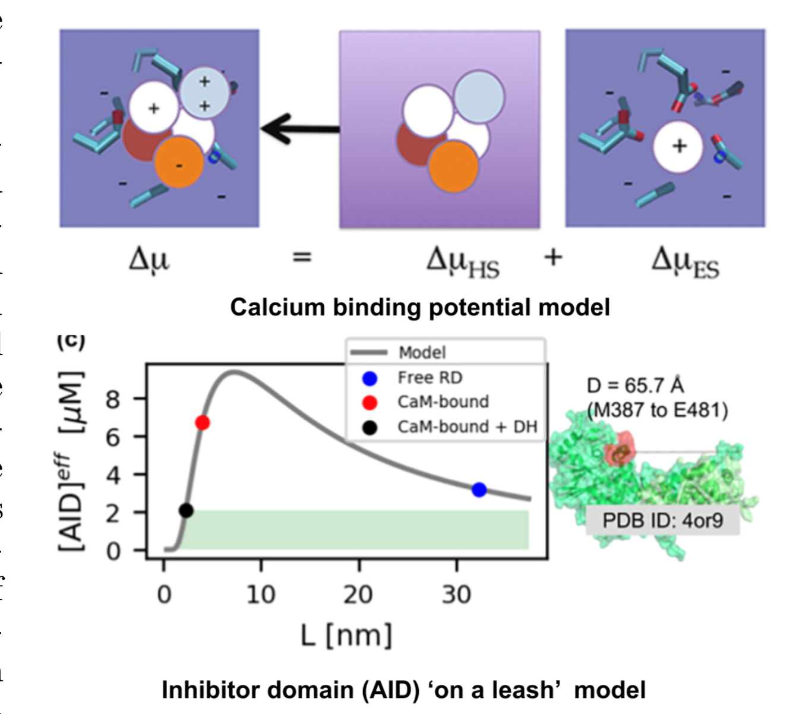
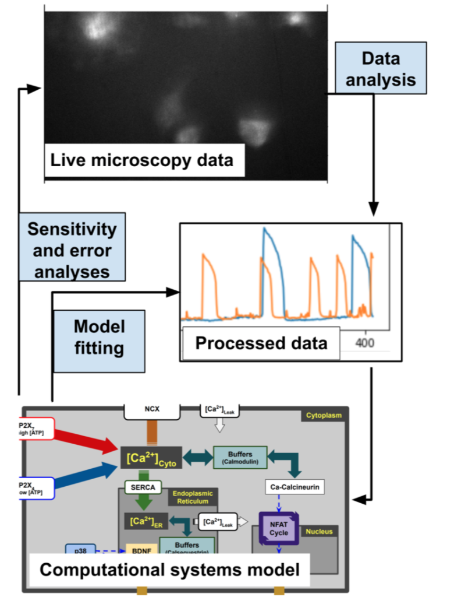
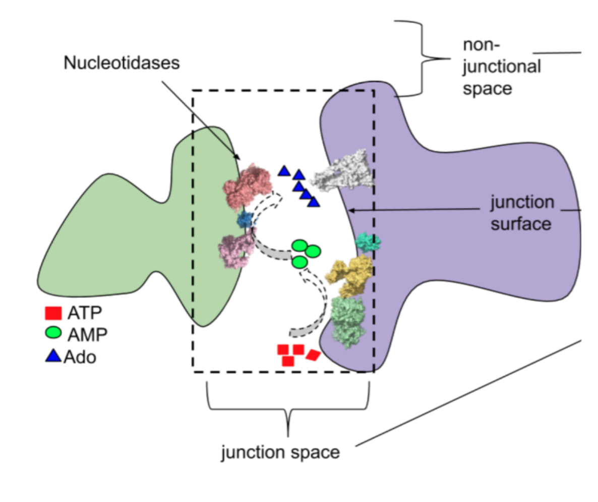

Molecular and Cellular Mechanisms of Calcium Signaling
Our lab uses computational and experimental approaches to uncover how biophysical properties of molecules and proteins shape cardiac and immune function at a cellular level. Our extramural funding in this area supports applications relevant to chronic pain, Alzheimer's disease, anti-tumor therapeutics and cardiac arrhythmias that could usher in new treatment strategies. These applications include investigations of cellular pathways controlled by calcium-dependent proteins such as troponin C (muscle contraction), calmodulin (calcium 'sensing'), parvalbumin (calcium 'buffering') and purinergic receptors (ATP-dependent calcium channels). We use a variety of computational approaches for investigating these systems, including molecular simulations, statistical physics, computer vision and numerical algorithms. In complement, our lab measures enzyme kinetics and performs live and fixed cell microscopy experiments to inform or validate our computational approaches. We are highly collaborative, as we work closely with several laboratories at Loyola and institutions world-wide that specialize in cardiac and neurological function. Our team comprises multi-disciplinary scientists at many career stages, from high school students to postdoctoral scholars, which provides for an excellent learning environment.
Current Projects
Engineering proteins to control calcium signal transduction
Calcium is an intracellular signaling molecule that proteins used to communicate, convert chemical energy into mechanical work and shape macrophage phenotypes. It is unsurprising therefore that calcium dysregulation in macrophages correlates with many diseases including Alzheimer's and chronic pain.This fact has motivated considerable interest in developing therapeutics that target dysregulated calcium signaling. Engineering calcium binding proteins is one such strategy that has emerged in recent years and has been an active area of research in my lab. However, despite decades of theoretical descriptions of calcium-binding and the availability of hundreds of high-resolution calcium binding protein structures, engineering these proteins to tune their properties has largely been a guess-and-check process with limited successes. We hypothesize that calcium affinity, if not binding kinetics, can be modulated by orders of magnitude through controlling proteins' changes in structure or solvent-exposed surface that occur during calcium binding. We are approaching this challenge through an innovative method that combines statistical physics models of ion binding and protein/protein interactions with 3-D protein structures, binding poses and interaction energies obtained from atomistic resolution molecular simulations

We have developed statistical physics models to predict the activity of a calcium-dependent phosphatase (calcineurin) involved in gene regulation
Modeling immune responses in microglia and macrophages
Pro-inflammatory responses in macrophages critically rely on the synchronized activity of several calcium dependent signaling pathways. We have therefore been advancing our system biology modeling to probe similar calcium signaling mechanisms in macrophages, albeit those connected with inflammation. However, much of our knowledge about macrophages calcium signalings results from rather non-physiological manipulations including gene knock-out or knock-in, or treatments with strong inhibitors, that confound in vivo calcium signaling mechanisms underlying macrophage inflammatory responses. While similar challenges that were once significant for cardiomyocytes have been surmounted through years of computational systems modeling, comparable models for macrophages have lagged far behind. Given the breadth of experimental studies implicating calcium in stages of macrophage inflammatory responses, we hypothesized that ATP-dependent activation of P2X channels, a class of transmembrane receptors, could invoke cytokine synthesis purely through triggering a small number of calcium dependent signaling pathways. We challenged this hypothesis by creating one of the first computational models of microglia the resident macrophages of the central nervous system.

We have developed protocols to train and evaluate computational models of calcium signaling directly from high-throughput microscopy data.
Understanding extracellular control of intracellular signaling pathways
Calcium binding proteins respond to fluctuations in intracellular calcium to orchestrate calcium-dependent signaling. These fluctuations are frequently triggered by the binding of extracellular molecules, like adenosine triphosphate (ATP), to trans- membrane receptors. In vitro, transmembrane receptors can be triggered by pipetting nucleotides into the cellular medium. Triggering of receptors in vivo is more complex as the available nucleotide substrate depends on many factors including how cells are packed, diffusion rates through intercellular junctions formed between macrophages and target cells and the activity of nucleotidases that synthesize or consume these substrates. Hence, we hypothesized that the priming of intracellular calcium signaling pathways in macrophages by extracellular ATP molecules critically depends on the intercellular junction composiution, such as the relative distribution of transmembrane receptors to enzymes that metabolize nucleotides. Unfortunately, these factors are difficult to precisely process, monitor or control in experiments, especially when many processes must be observed simultaneously. An appropriately trained computational model in principle could predict how these factors essentially control how a signal, ATP, propagates to junctional receptors in vivo to invoke calcium fluctuations. However, most approaches rely on either structurally-realistic atomistic models that cannot be extended to spatial scales (microns) relevant to substrate diffusion or use coarse-grained or continuum models that lack the atomistic accuracy to capture important, atomistic-scale interactions like electrostatic forces between molecules. A key innovation our lab has developed to address this limitation is a multi-scale approach that models signal transduction as reaction-diffusion processes occurring over large micron-sized regions, using effective parameters estimated from much smaller sub-regions

We develop 'multiscale' approaches to probe how molecular phenomena influence biological events that occur at the cellular and even tissue scale